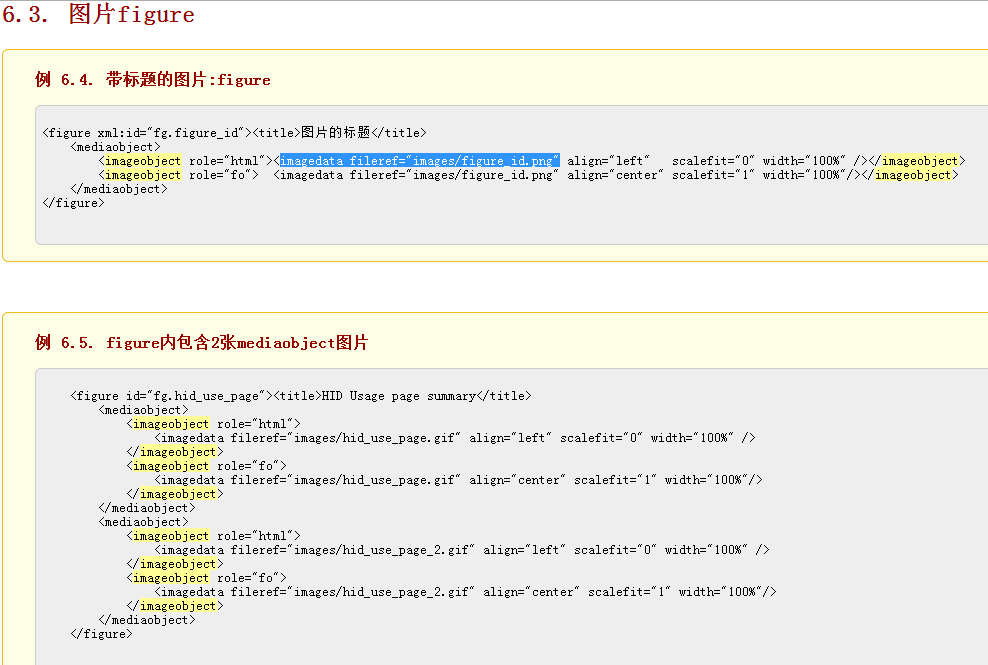

编辑命令行（输出html文档）: xsltproc -o git.html ../g.xsl git.xml
docbook-xsl-ns-1.78.1.zip 解压到 c:\docbook
ftp://ftp.zlatkovic.com/libxml/
需要的程序列表:- iconv-1.9.2.win32.zip – 编码转换工具
- zlib-1.2.3.win32.zip – 压缩工具
- libxslt-1.1.24.win32.zip – XSL和EXSL转换工具，xsltproc程序就在此包中
- libxml2-2.7.3.win32.zip – XML解析工具和处理工具，同时提供了验证工具xmllint和xmlcatalog
下载后，把这些包解压到同一个目录里，假设解压到C:\docbook\xsltproc目录，解压后，你可以看到在C:\docbook\xsltproc\下多了三个目录：bin，include和lib
- 章节的索引怎么出来？
- 文件内的链接问题？
- 怎么添加代码？
- 高亮一部分？代码 programlisting 标签
- CDATA 包含特殊字符的方法
- 边框背景色,边框等等？代码
- sect1等的标题，怎么生成到开头的索引里？
- 建立一个常用标志列表
- itemizedlist 和 带emphasis的itemizedlist -> listitem
- orderedlist -> listitem
- simplelist -> member
emphasis role="strong" "bold" "underline"
imageobject -> imagedata fileref="images/figure_id.png"
